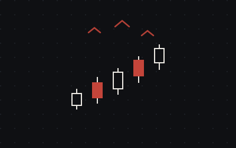

← Back to work
Stock Flock
.NET stocks and shares social platform
Backend endpoints to facilitate a social media style application to display stock portfolios. Currently operates with a local SQL server database, with authorisation handled via JWT.